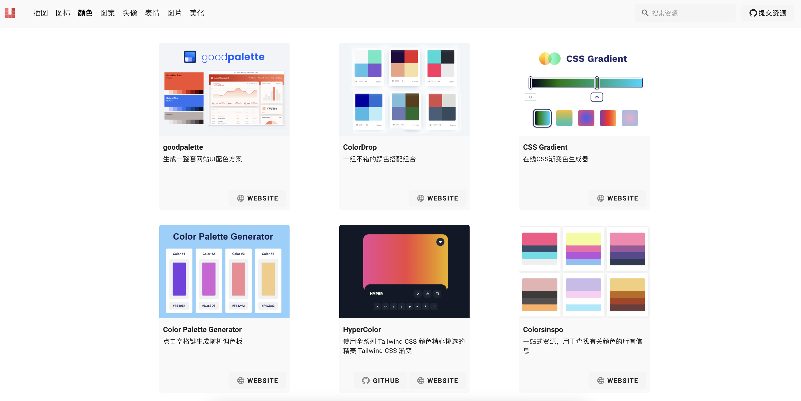
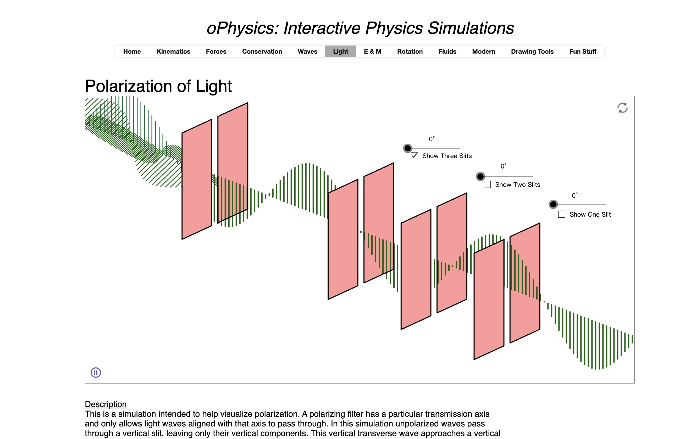
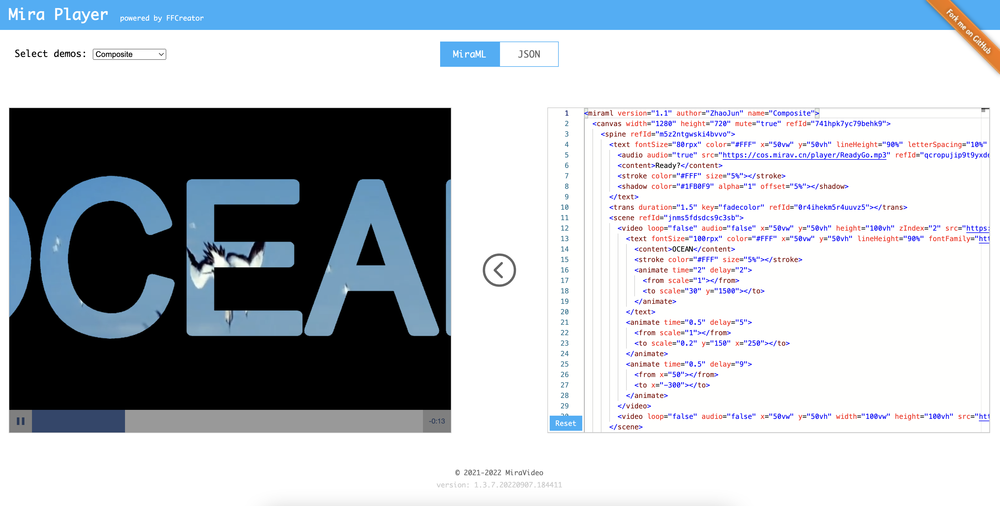
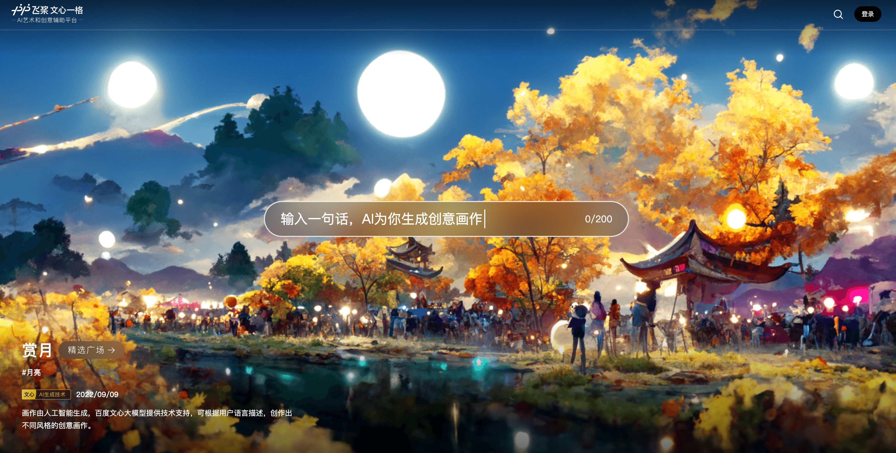
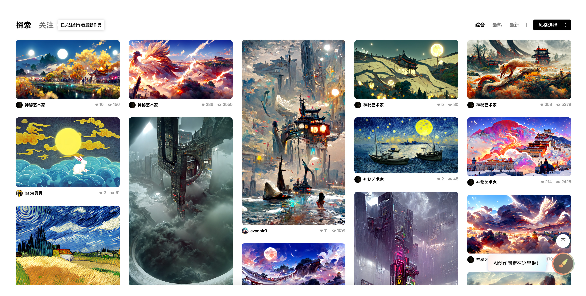
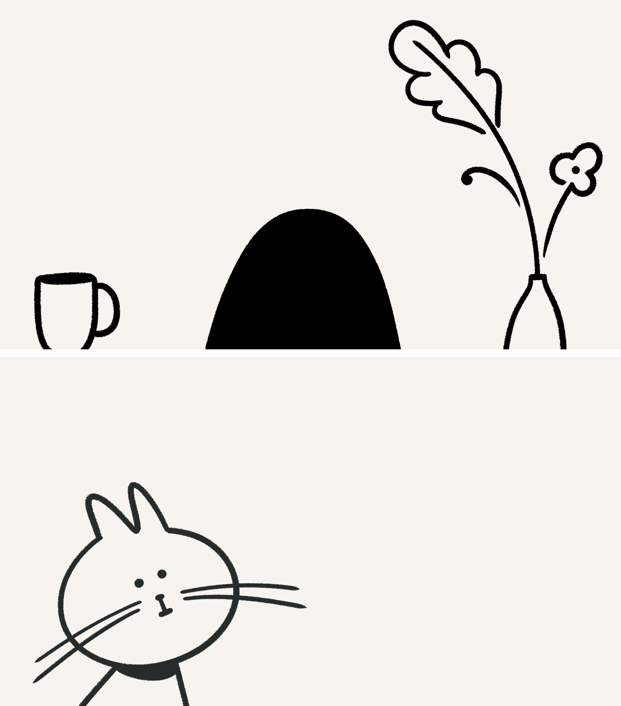

生产力色情
Caleb Schoepp 在他的个人博客中，以”生产力色情”为题，讲述了当今社交媒体中生产力色情的泛滥以及对个人造成的负面影响，看完满有启发的，我摘录其中部分重点内容，分享给大家。
他先指出社交媒体对我们造成的危害，比如这些精心策划过的内容，会刺激我们产生焦虑、孤独、嫉妒等等情绪，从而对现实生活产生不切实际的奢望；又比如基于推送的信息，很容易让我们沉浸于自己的信息茧房，对外界很容易产生极端的两极分化的看法。
但随后他指出，相较于这些负面影响，生产力色情的影响更为严重，他解释说，生产力色情是那些你消费这些内容后，觉得自己生产力爆棚，但实际上你什么也没做的事物，就如同其他的色情制品一样。
话糙理不糙，这样的内容其实我们的手机里俯拾皆是。比如《10 个提升代码性能的技巧》、《张一鸣是如何一步步成功的》、《7个动作减掉小幅》。这些内容有用吗？当然有用，但实际上，你把大量的时间花在了消费这些内容，甚至都没有过脑子，当然更没有实际去实践。但是它们却像色情片一样，让你感觉自己很行。
作者指出，生产力色情相较于社交媒体产生的其他负面影响，它有其独特的四个特性。
-
如果是刷了半天的朋友圈，没一会儿就会觉得很无聊，因为感觉它们浪费了我的时间，但如果是沉溺在生产力色情的内容中，我会觉得自己正在做有意义的事情。
-
它非常具有欺骗性，作者说他大概在高中的时候就已经接触到生产力色情，但直到最近才发现他们的存在。
-
作者认为我们依然需要这些生产力色情，虽然只是思考怎么做不行动不可取。但如果只是埋头赶路不抬头看天同样不可取，我们依然偶尔看看这些内容作参考。
-
生产力色情藏匿于任何形式的媒体中，相较于社交媒体，他在一些个人博客、纸媒中同样有可能出现，只不过当你去看那些媒体的内容时，这些“色情”制品会显得更温和些。
文章的最后，作者并没有给出行之有效的解决方案，只是提醒我们一点，意识到它们的存在很重要。
新玩意
据意查句
据意查句官网示意图
由清华大学研发的，根据描述使用者描述的意思来寻找名言名句的工具。目前需要使用微信登陆，试用了下，体验很不错，对于需要给自己内容润色，增加文采的小伙伴就有福利了，功能全部免费的哦。
UISET

UISET 颜色分栏示意图
作者把跟 UI 相关的免费资源做成了一个集合，并且项目是开源的，用户提交资源审核通过后，会自动进行部署上线。
oPhysics

oPhysics light 界面其中之一实验示意图
一个可交互的演示物理学实验的网站。 用户可以设置实验参数，能够实时看到实验结果。看了下目前涵盖的实验项目种类多达几十种，有相关专业领域的小伙伴可以到上面看看，之前我学微积分的时候就发现了可视化比较牛的 3Blue 团队，国外在基础领域可视化方面做的还是相当用心的。
FFCreator改进版

FFCreator 在线体验示意图
FFCreator是腾讯新闻前端团队开源的一个视频生成库，基于 Noed.js，但还存在一定的局限，比如没有所见即所得的编辑功能，排版样式需要写代码实现，不利于后期封装维护，并且只能在 node.js 环境下运行，不能在网页端运行，这个改进版，是米拉视频团队对这些缺陷的改进，重点在于发挥 js 能在浏览器执行的优势。
文心一格

一格操作界面示意图

用户创作的作品示意图
根据用户语言描述，创作出不同风格的创意画作。百度官方对它的定位是 AI 艺术和创意辅助工具，我试玩了下，目前画作的可用心还不高，但奈何 AI 的发展潜力巨大啊，找了个插画的朋友问了下，她觉得如果工具能够帮她画插画的背景，那可太方便了。感觉确实如此，未来的创作可能范围更广，可能会涌现大量的人与机器交互产生的作品。
Notion 背景

notion digital drop 页示意图
notion 出的小彩蛋，用户可以下载手机等设备的背景图，一直以来就非常喜欢 notion 的插画风格，相信有很多同样喜欢这种风格的小伙伴吧，官方给的一波福利，还不快冲~